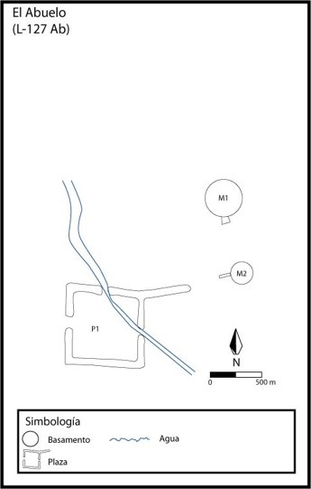

| Obras Hidráulicas por Sitio Arqueológico | |||
|---|---|---|---|
| Sitio Arqueológico | Tipo de Obra Hidráulica | Imagen | |
| Agua Caliente | Sistemas de Evacuación | ||
| Anita Grande | Sistema Mixto de Evacuación y Captación | ||
| El Abuelo | Sistema Mixto de Evacuación y Captación |  | |
| Monumento Nacional Guayabo | Sistemas de Evacuación y Captación | ||
| Las Mercedes | Sistemas de Evacuación y Captación | ||
| Nuevo Corinto | Sistemas de Evacuación y Captación | ||
| Rosa María | Sistema Mixto de Evacuación y Captación | |
|